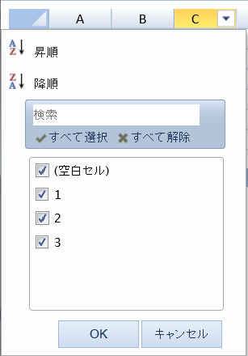

You can set the culture to "ja-jp", "zh-cn", or "en-us". The default culture is English.
You can specify the culture with a culture <meta> HTML tag, "<meta name="spreadjs culture" content="culture-string"/>" or with a globalization variable, "GC.Spread.Common.CultureManager.culture("culture-string")."
The globalization culture variable has precedence over the culture attribute in the HTML <meta> tag. If multiple <meta> tags are set and no culture attribute is set, then the last <meta> tag takes effect.
The Japanese culture option also requires that you add the gc.spread.sheets.resources.ja.x.xx.xxxxx.x.min.js resource to the page. The Korean culture requires that you add gc.spread.sheets.resources.ko.xxx.min.js to the page.
The Chinese locale ID is "$-804". You can set the locale ID to change the culture. The formatter supports the Chinese DBNum. Chinese DBNumber contains three forms, "[DBNum1]", "[DBNum2]" and "DBNum3". DBNumber must be set with the locale ID. For example, "[DBNum1][$-804]" + a format string. The locale ID has precedence over the culture name.
The Korean locale ID is 0x0412, You can use the ID to change the culture (for example: "[$-412]dddd"). The formatter supports DBNum1, DBNum2, and DBNum3 (for example: [DBNum1][$-412]General).
The culture settings might effect cell formatting and user interface elements such as the filter and fill dialogs and resize tooltips. Exception messages and events that contain messages might be affected by the culture setting.
The following image displays the row filter dialog with the "ja-jp" culture setting.

This example uses a globalization variable to change the culture.
| JavaScript |
Copy Code
|
|---|---|
GC.Spread.Common.CultureManager.culture("ja-jp");
|
|
This example uses a culture attribute in the HTML <meta> tag to change the culture.
| JavaScript |
Copy Code
|
|---|---|
<title>SpreadJS Culture Sample</title> <meta name="spreadjs culture" content="ja-jp"/> |
|
This example uses a culture attribute in the HTML <meta> tag to change the culture and creates a row filter.
| JavaScript |
Copy Code
|
|---|---|
<!DOCTYPE html>
<html>
<head>
<title>SpreadJS Culture Sample</title>
<!--change culture-->
<meta name="spreadjs culture" content="ja-jp" />
<link type="text/css" href="./css/gc.spread.sheets.x.x.x.css" rel="stylesheet" />
<script type="text/javascript" src="./scripts/gc.spread.sheets.all.x.x.x.min.js"></script>
<script type="text/javascript" src="./scripts/resources/ja/gc.spread.sheets.resources.ja.x.x.x.min.js"></script>
<script type="text/javascript">
window.onload = function () {
//init spread
var spread = new GC.Spread.Sheets.Workbook(document.getElementById("sampleDiv"));
var activeSheet = spread.getActiveSheet();
var cellrange =new GC.Spread.Sheets.Range(0, 2, 5, 1);
var hideRowFilter =new GC.Spread.Sheets.Filter.HideRowFilter(cellrange);
activeSheet.rowFilter(hideRowFilter);
}
</script>
</head>
<body>
<div id="sampleDiv" style="width: 600px; height: 400px; border: 1px solid gray">
</div>
</body>
</html>
|
|
This example uses a globalization variable to change the culture for cell (0,0) and a local ID to change the formatting for cell (0,1) and cell (0,2).
| JavaScript |
Copy Code
|
|---|---|
GC.Spread.Common.CultureManager.culture("zh-cn"); activeSheet.setValue(0,0, new Date("2012/5/8")); activeSheet.getCell(0,0).formatter("dddd"); activeSheet.setValue(0,1, new Date("2012/5/8")); activeSheet.getCell(0,1).formatter("[$-804]dddd"); activeSheet.getCell(0,1).formatter(new GC.Spread.Formatter.GeneralFormatter("dddd", "zh-cn")); activeSheet.setValue(0, 2, 123456789123456000); activeSheet.getCell(0,2).formatter("[DBNum1][$-804]General"); |
|